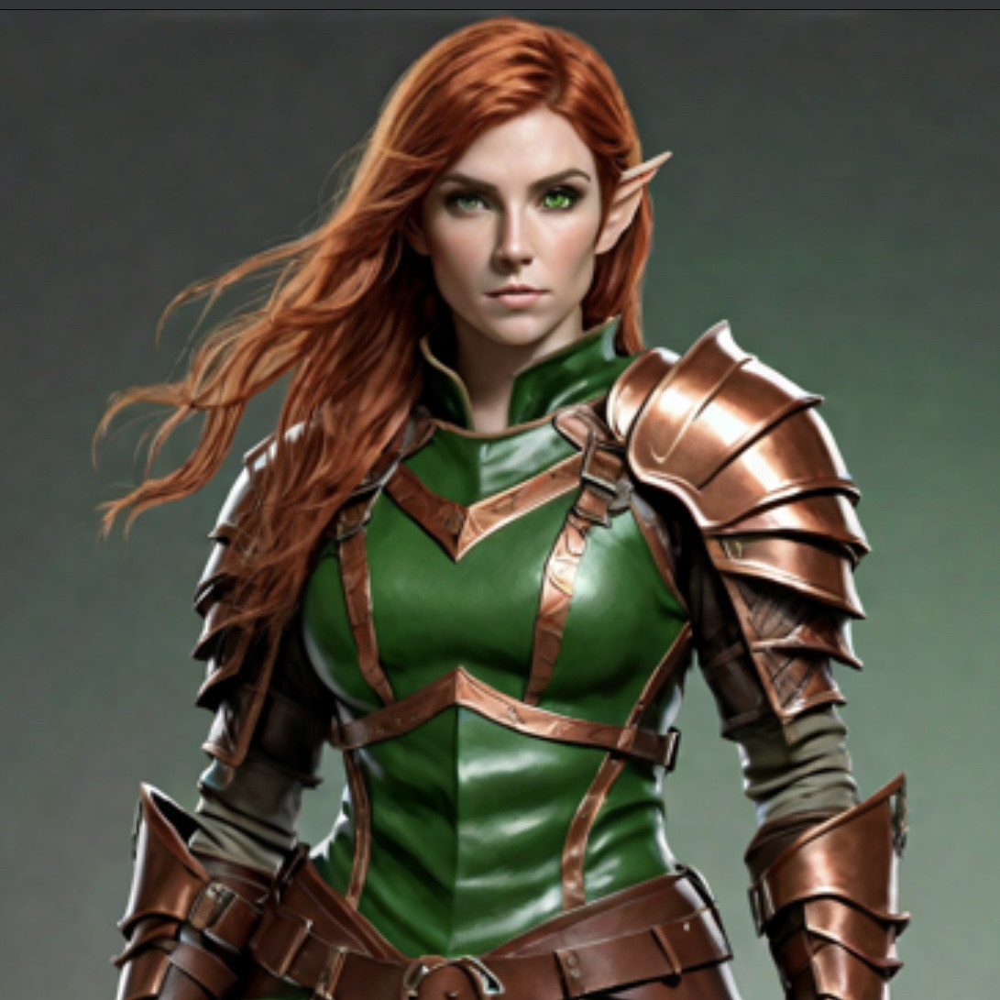
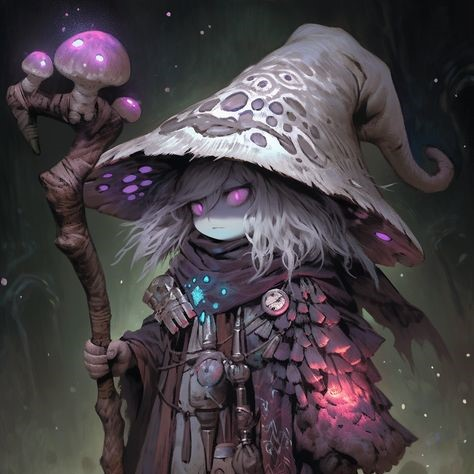
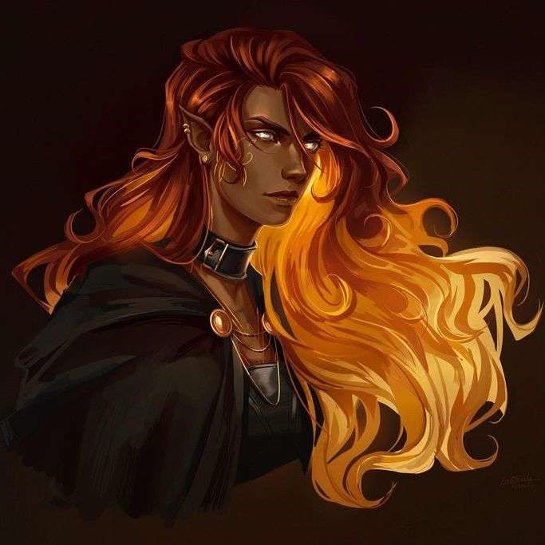
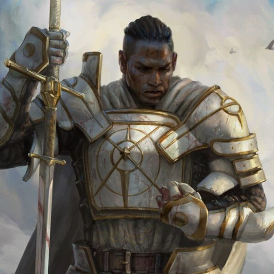

Loot
Party (low: 2247.32 | mid: 2412.32 | high: 2547.32)
-
16 platinum,
279 gold,
160 silver,
232 copper
- 3x emeralds (50gDM)
- Diamond (100gDM)
- Sapphire (50gDM)
- Semi-precious stones (300gDM)
- 4 Shining Swords shortswords (10gDMG)
- +1 Longsword (Uncommon) (150-300gDM)
- 11x Potion of Healing (2d4 + 2) (50gDMG)
- 3x Potion of Greater Healing (Uncommon, 4d4 + 2)
(200gDM
150gSSP)
Tokka (low: 2325 | mid: 6390 | high: 26975)
- Ring of Protection (Rare, Attunement req'd)
(500-5000gDMG
3500gSSP)
- Ring of Mind Shielding (Uncommon, Attunement req'd)
(100-500gDMG
16000gSSP)
- Personal Bag of Holding, w/Library books
*(100-500gDMG
4000gSSP
*not counted in total because she made it)
- Full plate armor (1500gDMG)
- +1 Longsword (150-300gDM)
- 2x Vial of Poison (150-2000gDMG)
- 1 Vial of stink water (150gDM)
- 1 Vial of acid (ranged improvised weapon, 2d6 acid) (25gDMG)

Kharmira (low: 550 | mid: 1000 | high: 10520)
- Net of Focus (Uncommon)
*(100-500g*DMG
4200SSP
*calculated like a Luckstone, which it functions similarly to)
- Deck of Illusions, 20/34 remaining (Uncommon)
(100-500g=~300gDMG
6120gSSP)
- Canteen of Enhanced Greater Healing potion (4d4 + 2, and ends any 1 condition on the drinker. Can only benefit once per long rest)
(200gDM
150gSSP)

Warmbread (low: 775 | mid: 1300 | high: 10525)
- Golden Headband of Intellect (Uncommon, Attunement req'd)
(100-500gDMG
8000gSSP)
- 1 vials of poison (150-2000gDMG)
- 2 vials of stink water (150gDM)
- 1 vials of acid (ranged improvised weapon, 2d6 acid) (25gDMG)
- Diamond (100g DM)
- Emerald (50g DM)
- Sapphire (50g DM)

Canas (low: 0 | mid: 0 | high: 0)

Redimir (low: 650 | mid: 3325 | high: 5200)
- Bag of Beans (Rare) (500-5000g=~3125gDMG)
- Canteen of Enhanced Greater Healing potion (4d4 + 2, and ends any 1 condition on the drinker. Can only benefit once per long rest)
(200gDM
150gSSP)
Note: gemstones worth keeping as spell components
Diamonds, whole or for diamond dust
Rubies, whole or for ruby dust
Jade for jade dust
Agate
Onyx
Sapphire